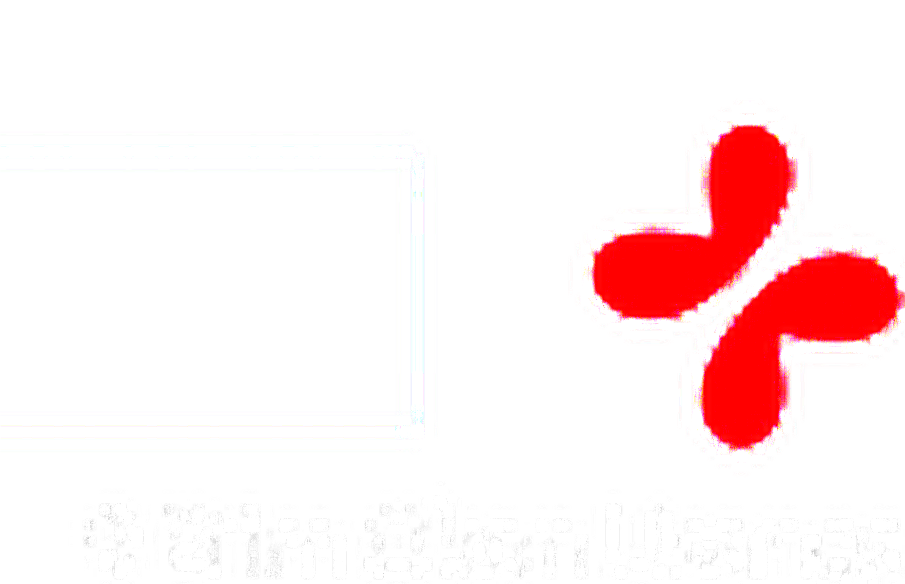

Fast, accurate, on-site diagnostic testing — results the same day, so treatment can begin without delay.
Our fully equipped on-site laboratory handles a comprehensive range of diagnostic tests. Walk in, get tested, and receive your results the same day — enabling your doctor to make informed treatment decisions immediately.
State-of-the-art diagnostic equipment with trained laboratory scientists delivering precise results.
Walk in for any of the following tests — no appointment required for most basic investigations.
Don't see the test you need? Call us — we offer more.